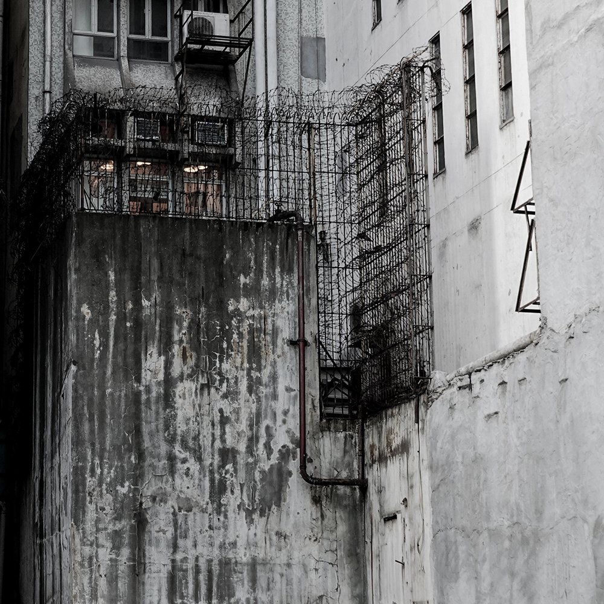

Deterioration
(Art Photography Project at Hong Kong City University)
A stage integral to impermanence. Everything that surrounds us will lose it’s form, creating something new, yet old. Each new mark and peel show a change of character brought on throughthe passage of time. Just like the buildings scattered throughout, we share a similar fate.
(Art Photography Project at Hong Kong City University)
A stage integral to impermanence. Everything that surrounds us will lose it’s form, creating something new, yet old. Each new mark and peel show a change of character brought on throughthe passage of time. Just like the buildings scattered throughout, we share a similar fate.
